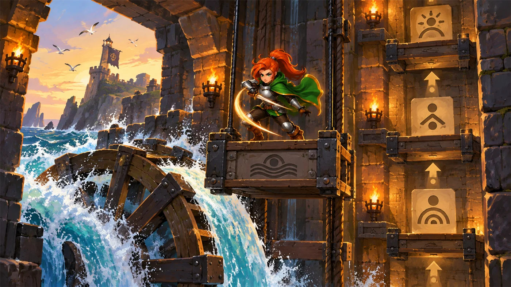
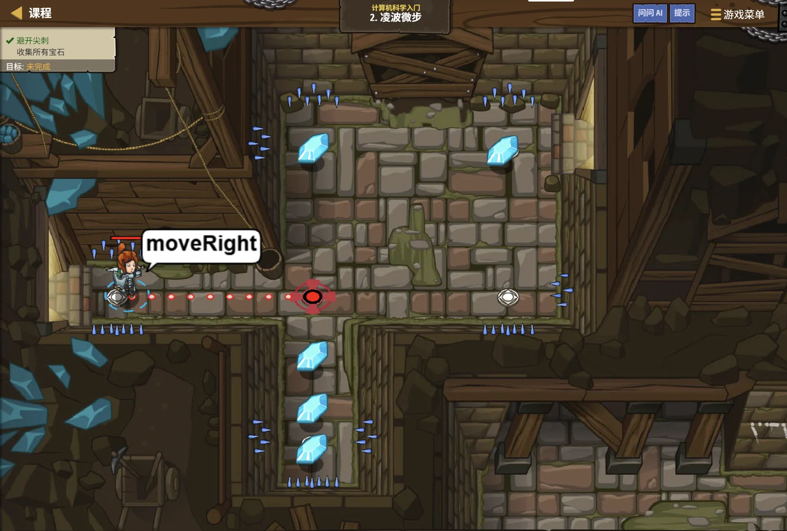

故事：地牢越来越深，通道变得更长，宝石散落各处。
你正想快步穿行，身后却传来脚步声——再磨蹭，麻烦就找上门了。
要像"凌波微步"一样穿行，你得学会一件事：一次指令，走多步。
扣哒考级 · GESP PYTHON 一级 · 第 4 单元 | 烛火岗哨 CANDLEWATCH OUTPOST
潮汐升降梯 顺序结构与输入输出
Sequence, Input & Output

安雅
红发队长 · 你的旅伴
岗哨靠海，塔的背面装着一台潮汐升降梯：海水涨上来，把吊篮一层层往上顶；
退潮时它再一层层落回去。整台机器只有一件事——照着顺序，一层接一层地走。
程序默认也是这么跑的。安雅按下一层的按钮，你写下的每一行，它都从上到下、一条不落地执行。 这就是三大结构里最简单的那个——顺序结构。
程序默认也是这么跑的。安雅按下一层的按钮，你写下的每一行，它都从上到下、一条不落地执行。 这就是三大结构里最简单的那个——顺序结构。
安雅 · 红发队长
顺序结构太简单，所以今天我们把重点放在输入与输出上——
怎么把话写在屏幕上（print），怎么把外面的数据收进来（input）。
这两件事学会，你的程序才算真的'活'了。
assets/illustrations/py-L1-04-00_tidal_platform.webp
【配图位】烛火岗哨外侧的悬崖：一座由铁链与木轮驱动的升降梯贴着崖壁上下移动，梯台正随涨潮缓缓升起，水花在平台边缘溅成一道白线；崖顶的信号员挥旗示意放行，英雄站在梯台上抓紧铁链。
0 单元导语与目标
Unit Overview
1学完这个单元，你将能……
- 说清"顺序结构"的含义，并知道它是三大结构的基础
- 用
print()输出一个或多个值 - 用
sep和end控制分隔与换行 - 用 f-string 把变量嵌进句子里
- 用
input()接收用户输入，并转成需要的类型 - 写出完整的"输入—处理—输出"程序
2对标 GESP 考纲（Python 一级）
- （5）理解并掌握"输入、处理、输出"程序编写方法，掌握 Python 编码规范
- （11）掌握输入输出语句 input 和 print
- （7）了解程序的顺序结构、选择结构、循环结构
- 考核目标：能独立创建完整的编程文件并运行通过
1 顺序结构
Sequence Structure
顺序结构是程序最基本的执行方式：代码从上往下，一行接一行地执行，不跳步、不回头。 岗哨的升降梯是这样，你写的每一段 Python 代码默认也是这样。
图 2（SVG）：顺序结构——从上到下，依次执行
重要观念：三种基本结构是——顺序、分支、循环。
其中顺序结构是基础：分支是"跳过某些行"，循环是"回头再来几遍"，
但它们内部仍然是一条条按顺序执行的语句。
写代码的顺序很重要：电脑执行代码时一条条往下走，
变量必须先赋值、后使用。把
print(a) 写在 a = 1 前面，程序就会报错。
安雅 · 红发队长
你发现没有？写程序和我们守夜一模一样：先接哨、再巡墙、最后报更。顺序要是反了呢？先报更再去巡墙——队长一听就知道你在梦里巡的。
顺序结构，就是"按正确的顺序，把该做的事一件件做完"。
2 输出：print
Output with print
2.1 输出多个值
print() 是我们最早认识的函数。它不只输出一个值，还可以一次输出好几个，
中间自动用空格隔开：
输出多个值
Python
a = 3
b = 4
print(a)
print(a, b)
print("和为", a + b)
print("哨火" , "不熄")OUTPUT 3
3 4
和为 7
哨火 不熄
3 4
和为 7
哨火 不熄
要注意：print(a, b) 里的逗号是"分隔符"，
它会在两个值之间自动补一个空格。所以输出是 3 4，而不是 34。
2.2 sep 与 end
这两个参数是真题的高频考点，一定要分清楚：
| 参数 | 作用 | 默认值 | 例子 | 输出 |
|---|---|---|---|---|
sep | 多个值之间用什么隔开 | 一个空格 | print(3, 4, sep="#") | 3#4 |
end | 输出结束后用什么收尾 | 换行符 \n | print(3, end="-") | 3-（不换行） |
图 3（SVG）：
sep 出现在值之间，end 出现在整行的末尾
sep 与 end 实例
Python
print(3, 4, sep="#") # 分隔符换成 #
print(3, 4) # 默认用空格
print("A", end="") # 不换行
print("B", end="") # 继续接在后面
print("C")
print(1, 2, 3, sep="-", end="!") # 两个参数可以一起用OUTPUT 3#4
3 4
ABC
1-2-3!
3 4
ABC
1-2-3!
记住：
sep 只影响同一个 print 里多个值之间；
end 影响的是这次输出结束后的动作——默认换行，改成别的就接在后面。
2.3 f-string 格式化
想把变量的值嵌进一句话里，最方便的写法是 f-string：在引号前加一个 f，
然后在花括号里直接写变量或表达式。
图 4（SVG）：f-string 的写法与替换规则
f-string 实例
Python
a = 4
name = "安雅"
print(f"a+2={a+2}") # 花括号里可以放表达式
print(f"{name} 有 {3} 支火把") # 也可以放变量和数字
print(f"{name}的血量是 {100}")OUTPUT a+2=6
安雅 有 3 支火把
安雅的血量是 100
安雅 有 3 支火把
安雅的血量是 100
别忘了那个 f：如果没有写
f，
花括号里的内容不会被替换，会原样输出 {a+2}。
这是真题考过的一个点。
2.4 宽度对齐 :3 与保留小数
f-string 的花括号里还可以加"格式说明"，用来控制输出的样子。最常用的两个：
| 写法 | 含义 | 例子（N = 35） | 输出 |
|---|---|---|---|
{N:3} | 占 3 个字符宽度，不足的左边补空格 | f"{N:3}" | 35 |
{N:03} | 占 3 位，不足的前面补 0 | f"{N:03}" | 035 |
{x:.2f} | 保留两位小数 | f"{3.14159:.2f}" | 3.14 |
对齐与保留小数
Python
print(f"{35:3}") # 宽度 3
print(f"{5:3}") # 宽度 3，左边补空格
print(f"{5:03}") # 宽度 3，左边补 0
pi = 3.14159
print(f"{pi:.2f}") # 保留两位小数OUTPUT 35
5
005
3.14
5
005
3.14
还有老式写法：你也可能见到
"%.2f" % pi 这种写法，
它的效果和 f"{pi:.2f}" 一样（保留两位小数）。
两种都认识即可，自己写建议用 f-string，更清楚。

欧曼 · 传奇巫师
我被关在地牢牢房那些年，唯一能说话的对象就是墙上的暗语。程序也一样——它不会读心术，你得把话说出来它才知道。
想让它把外面的数收进来，用
input()；想让它开口告诉你结果，用 print()。
3 输入：input
Input
3.1 input 拿到的是字符串
input() 会让程序停下来等你打字，你按下回车后，
它会把你打的那一整行作为结果返回。括号里可以写一句提示文字：
第一个输入程序
Python
name = input("请输入你的名字：")
print("你好，" + name)运行过程 请输入你的名字：安雅 （用户输入后回车）
OUTPUT 你好，安雅
OUTPUT 你好，安雅
最关键的一点：
input() 拿到的永远是字符串（str），
哪怕你输入的是 123，它拿到的也是文字 "123"，不是数字 123。
3.2 数字输入要转换
所以，想做算术就必须先转换类型。标准写法是把 int() 或 float() 套在 input() 外面：
接收数字
Python
# 写法一：一步到位（最常用）
a = int(input("请输入第一个数："))
b = int(input("请输入第二个数："))
print("两数之和是：", a + b)运行过程 请输入第一个数：7
请输入第二个数：5
OUTPUT 两数之和是： 12
请输入第二个数：5
OUTPUT 两数之和是： 12
写法二：先收再转（效果一样）
Python
a = input("请输入第一个数：") # 此时 a 是字符串 "7"
a = int(a) # 转换之后才是数字 7
print(type(a))OUTPUT <class 'int'>
小数怎么办？如果输入可能是小数（比如 3.5），要用
float()：
x = float(input())。
用 int() 去转 "3.5" 会直接报错。
4 输入—处理—输出
Input · Process · Output
这是考纲里明确要求的"程序编写方法"，也是所有程序最基本的骨架。我们写一个完整的例子：
图 5（SVG）：输入 → 处理 → 输出，程序的基本骨架
完整例子：算总价
Python
# ① 输入
price = float(input("请输入单价："))
count = int(input("请输入数量："))
# ② 处理
total = price * count
# ③ 输出
print(f"总价是 {total:.2f} 元")运行过程 请输入单价：3.5
请输入数量：4
OUTPUT 总价是 14.00 元
请输入数量：4
OUTPUT 总价是 14.00 元
写程序的固定思路：
先问"数据从哪来"（输入）→ 再问"要怎么算"（处理）→ 最后问"结果给谁看"（输出）。
把这三维想清楚，代码自然就写出来了。

assets/illustrations/py-L1-04-01_tidal_lift.webp
【配图位】海边岗哨背面的潮汐升降梯：石制吊篮被上涨的海水逐层顶起，每一层石壁上刻着一条发光指令符文；一名新兵站在吊篮里向上张望，下方是翻涌的白色浪花。
5 拓展：turtle 的坐标与抬笔
Turtle: Coordinates & Pen Control
上一单元认识了海龟怎么走，这一节再补两个重要工具——坐标定位和抬笔落笔。
抬笔与落笔
Python
import turtle
turtle.forward(100) # 会画出一条线
turtle.penup() # 抬笔：之后移动不留痕迹
turtle.forward(50) # 这一段是空白
turtle.pendown() # 落笔：恢复画线
turtle.forward(100) # 又画出一条线
turtle.done()效果 画出两条线段，中间空了一段
坐标与回家
Python
import turtle
turtle.goto(100, 100) # 移动到坐标 (100, 100)，过程中画线
turtle.goto(100, 0) # 再到 (100, 0)
turtle.home() # 回到原点 (0, 0)，同样会画线
turtle.done()效果 一共画出 3 条线（起点→(100,100)→(100,0)→原点）
真题陷阱：
goto() 和 home()
都会在移动过程中画线（除非之前抬了笔）。
数"一共画了几条线"时，一定要把起点到第一个 goto 之间的那段也算进去，
而且 home() 这一段也别忘了。
assets/illustrations/py-L1-04-02_input_output_gate.webp
【配图位】岗哨的城门：一侧是漏斗状的"收货口"（输入），外部的补给袋被吸入；另一侧是滑道状的"出货口"（输出），发光的成果牌被送出来；一只机械鸭守在操纵杆旁。
6 代码实战
Level Practice
关卡
凌波微步
进入关卡 →
assets/stages/py-L1-04-stage1_swift_steps.webp
【关卡截图位】请把《凌波微步》的游戏画面截图放到此处（放入 assets/stages/ 目录，文件名为 py-L1-04-stage1_swift_steps.webp）。
思路：看上面的关卡实况——宝石就在正上方两格的地方，答案短得离谱。 不过在写下它之前，我们先看看"笨办法"长什么样，你才知道它妙在哪里。
笨办法：同一条指令写两遍
Python
hero.moveUp()
hero.moveUp()结果 向上走 2 格 —— 写了两行，其实只做了一件事
重点示例：把数字放进括号
Python
hero.moveUp(2)结果 一样向上走 2 格，只写了一行
括号里的数字叫"参数"（Argument）：
它会给方法补充一条信息，改变它的行为——把"走 1 格"变成"走 2 格"。
语法就是：
语法就是：
对象.方法(参数)。这个格式你已经很熟了吧？对，就是 print("你好") 那个括号。
和"输入"连起来看：
去扣哒世界闯这一关 →
input() 是你从键盘收数据，
moveUp(2) 是你把数据交给方法。
方向相反，但都是"在括号里传递信息"。
7 常见陷阱
Common Pitfalls & Debugging

扣哒鸭 · 调试官
输入输出这章的错，十个里有七个是"忘了转换类型"。
你先看下面这五条，看完就知道我为什么这么说了。
1
忘了转换类型。写
a = input() 之后直接 a + 1，程序报错。
扣哒鸭：
input() 给你的是字符串，不是数字。
你对着一串文字做加法，它当然不干。要么写 a = int(input())，要么事后 a = int(a)。正确写法：
a = int(input())2
把 sep 和 end 记反了。想控制中间的分隔符，却用了
end。
扣哒鸭：sep 管中间，end 管结尾。
想变成
3#4 用 sep="#"；想不换行接下去用 end=""。
正确写法：
print(3, 4, sep="#")；print("A", end="")3
f-string 忘了写 f。写
print("{a}来了")，输出的是 {a}来了。
扣哒鸭：引号前面那个 f 才是开关。没有 f，花括号就是普通字符，
不会被替换。少写一个字母，结果差一整句话。
正确写法：
print(f"{a}来了")4
用 int() 去转小数。写
int(input())，用户输入 3.5 就报错。
扣哒鸭：
int("3.5") 会报错，因为 "3.5" 不是合法整数。
输入可能是小数时，请用 float()，别硬来。正确写法：
x = float(input())5
提示文字塞进了括号外面。写
print(input("请输入：")) 与
input(print("请输入：")) 混着用。
扣哒鸭：提示语要写在
input() 的括号里面，
用引号包好：input("请输入：")。
别把 print 和 input 套在一起，那样只会输出一个空值。正确写法：
name = input("请输入你的名字：")8 题目练习
Practice
下面 7 道题中，前 4 道改编自 GESP 真题，后 3 道为原创练习题。
改编自 2026 年 9 月 · Python 一级 · 第 3 题单选题
下列 Python 代码执行后，其输出是（ ）。
1 a = 4
2 print(f"a+2={a+2}")
A.a+2=6 B.a+2={a+2} C.6=6 D.4+2=6
查看答案与详解
答案：A。f-string 中花括号里的内容会被求值后替换：
B 项是很多人会选的——只要花括号被正确配对，它就一定会求值。
对应小节2.3 f-string 格式化。
{a+2} 变成 4+2 的结果 6；花括号外面的 a+2= 是普通文本，原样输出。B 项是很多人会选的——只要花括号被正确配对，它就一定会求值。
对应小节2.3 f-string 格式化。
改编自 2026 年 9 月 · Python 一级 · 第 5 题单选题
下列 Python 代码执行后，其输出是（ ）。
1 a = 3 2 b = 4 3 print(a, b, sep = "#")
A.3 4 B.3#4 C.3 # 4 D.分两行输出 3 和 4
查看答案与详解
答案：B。
补充：控制换行要用
对应小节2.2 sep 与 end。
sep 把多个输出项之间的分隔符从空格换成了 #。
分隔符只出现在两个值之间，不会出现在句首或句尾（所以 C 项多出的空格是错的）。补充：控制换行要用
end，两个参数不要记混。对应小节2.2 sep 与 end。
改编自 2026 年 9 月 · Python 一级 · 判断题第 1 题判断题
Python 程序执行 input() 函数时通常是使用键盘等输入设备来输入某个变量的值。（ ）
查看答案与详解
答案：正确（√）。
对应小节3.1 input 拿到的是字符串。
input() 会在程序运行时等待用户输入，
最常见的输入设备正是键盘。注意输入得到的内容是字符串，当数字用要转换。对应小节3.1 input 拿到的是字符串。
改编自 2026 年 9 月 · Python 一级 · 判断题第 4 题判断题
下列 Python 代码执行时如果先后输入 10 和 10，则将输出
10小于等于10。（ ）1 N = int(input())
2 M = int(input())
3
4 if N > M:
5 print(f"{N}大于{M}")
6 else:
7 print(f"{N}小于等于{M}")
查看答案与详解
答案：正确（√）。N = 10、M = 10，
说明：本题融合了
对应小节3 输入；2.3 f-string。
10 > 10 不成立 → 走 else 分支，
输出 10小于等于10。说明：本题融合了
input、类型转换、分支与 f-string 四个考点，
是真题里"综合小题"的典型形式。对应小节3 输入；2.3 f-string。
原创练习题单选题
下列 Python 代码执行后，输出的结果是（ ）。
1 a = "5" 2 a = int(a) 3 print(a + 5)
A.55 B.10 C."55" D.程序报错
查看答案与详解
答案：B。
易错点：若不转换，
对应小节3.2 数字输入要转换。
a 先是字符串 "5"，
经 int(a) 转换后变成数字 5，5 + 5 = 10。易错点：若不转换，
"5" + 5 会报错，
而 "5" + "5" 会得到字符串 "55"。对应小节3.2 数字输入要转换。
原创练习题单选题
下列 Python 代码执行后，输出的结果是（ ）。
1 print("A", end="")
2 print("B", end="")
3 print("C")
A.分三行输出 A B C
B.一行输出 A B C（带空格）
C.一行输出 ABC
D.只输出最后一行 C
B.一行输出 A B C（带空格）
C.一行输出 ABC
D.只输出最后一行 C
查看答案与详解
答案：C。
因此输出为一行
对应小节2.2 sep 与 end。
end="" 表示输出结束后什么都不加（不换行、不加空格），
所以前两次输出会紧贴在一起；最后一次没有设 end，按默认换行。因此输出为一行
ABC。对应小节2.2 sep 与 end。
原创练习题编程题
题目要求：编写程序，从键盘读入两个整数，输出它们的和、差、积、商（整除）与余数，每项一行。
查看参考答案与要点
a = int(input("请输入第一个整数："))
b = int(input("请输入第二个整数："))
print(a + b) # 和
print(a - b) # 差
print(a * b) # 积
print(a // b) # 整除
print(a % b) # 余数
要点：
① 两个输入都要套 int()，否则得到的是字符串，无法做算术；
② 题目要"整除"就用 //，不要用 /（那会得到小数）；
③ 五个 print 各输出一行，正好符合"顺序结构"。
对应小节3 输入；4 输入—处理—输出。
9 本单元小结
Unit Summary
你在升降梯旁收获了什么
- 顺序结构——代码从上到下依次执行，不跳步、不回头；它是三大结构的基础。
- print 多值输出——多个值之间自动用空格分隔。
- sep 与 end——
sep管值之间的分隔符，end管整行结尾的收尾字符。 - f-string——引号前加
f，花括号里放变量或表达式会被求值替换。 - 格式控制——
{x:3}控制宽度、{x:.2f}保留两位小数。 - input——接收用户输入，拿到的永远是字符串；要参与算术必须先
int()或float()。 - 三段式——输入 → 处理 → 输出，这是所有程序的骨架。